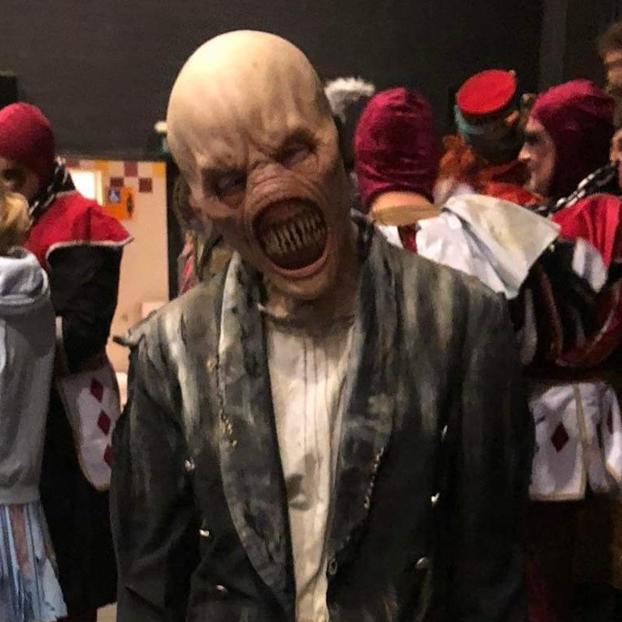

First slide label
Some representative placeholder content for the first slide.
Second slide label
Some representative placeholder content for the second slide.

slide label
Some representative placeholder content for a slide.

Third slide label
Some representative placeholder content for the third slide.